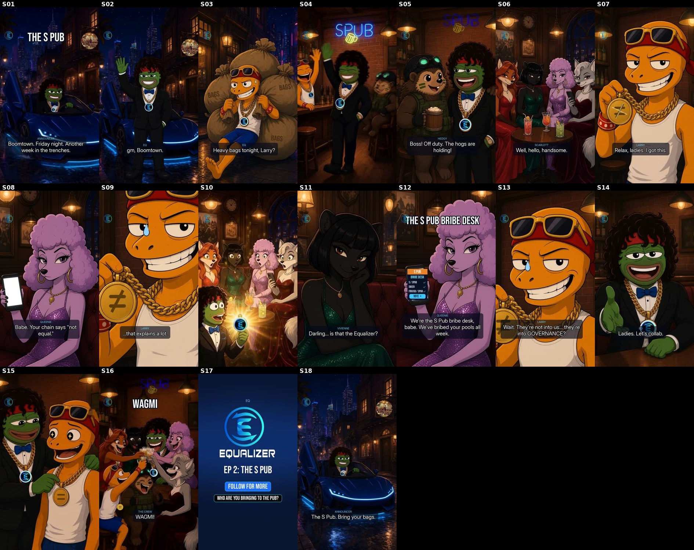

EQ · Ep 2 “The S Pub” · preview v2

What this is
- v2: ending re-cut (Blake: “a fair bit of double up”). Everything up to “Ladies. Let's collab.” (0–41.4 s) is unchanged, frame for frame. The back half is now ONE wrap-up: EQ flicks the slash off Larry's ≠ (“There. Now you're equal.”), one WAGMI cheer, end card, and the tag “The S Pub. Bring your bags.” 59.4 s → 52.1 s.
- Cut from v1: the pool break (“Even split, boss!”), the PUMP tap (“UP ONLY!”), “To another week in the trenches. Send it.”, Larry's “I'm EQUAL!”, and “Where everybody's equal.” The end-card pill “WE ARE ALL EQUAL” is now “FOLLOW FOR MORE”, so “equal” lands once, on the clinch.
- Arc: HIGH (EQ rolls in, high-fives, bro-hug) → LOW (Larry's chain reads ≠, then “they're not into us… they're into GOVERNANCE?”) → collab → CLINCH (the ≠ becomes =, paying off Queenie's “Your chain says not equal”) → WAGMI → tag → loops back outside.
- Twist (researched): the glamorous table lights up at the “=” because they are the S Pub bribe desk. $SPUB bribes Equalizer pools, so they want EQ's vote. The women are competent equals, not props.
- Low-cost preview: coded animatic shots on generated plates plus 4 MiniMax H3 motion shots from v1. v2 spent 0 USDC on PZERO (reused the toast clip; the clinch is a coded flick on a regenerated warm-grin plate) and one new ElevenLabs announcer line.
- Voices: saved EQPepe ElevenLabs only (Announcer, EQ/CoolCat, Larry, Hedgy, Scarlett, Queenie, Vivienne). Mix: −14 LUFS target (measures −14.4 in the file), ≤ −1 dBTP (−1.6).
- No numbers, APRs or lock claims are shown anywhere. Contessa and the SPUB mascot are on screen without a line.
Script & dialogue
S01 · 0.0s
ANNOUNCER: Boomtown. Friday night. Another week in the trenches.
S02 · 4.4s
EQ: gm, Boomtown.
S03 · 6.5s
LARRY: Ser! You're rollin' in HOT!
EQ: Heavy bags tonight, Larry?
LARRY: Few understand.
S05 · 13.8s
HEDGY: Boss! Off duty. The hogs are holding!
S06 · 17.1s
SCARLETT: Well, hello, handsome.
S07 · 19.1s
LARRY: Relax, ladies. I got this.
S08 · 20.9s
QUEENIE: Babe. Your chain says "not equal."
S09 · 23.4s
LARRY: …that explains a lot.
S11 · 27.4s
VIVIENNE: Darling… is that the Equalizer?
S12 · 30.7s
QUEENIE: We're the S Pub bribe desk, babe. We've bribed your pools all week.
S13 · 34.6s
LARRY: Wait. They're not into us… they're into GOVERNANCE?
S14 · 39.4s
EQ: Ladies. Let's collab.
S15 · 41.4s
EQ: There. Now you're equal.
S16 · 44.4s
THE CREW: WAGMI!
S18 · 49.0s
ANNOUNCER: The S Pub. Bring your bags.
CT phrase bank (researched)
| another week in the trenches | survived the grind | "Another week in the trenches… some cooked. some got cooked. either way… we made it to friday. gm Degens" (@Dgenlifestyles); "Another week in the trenches. Gm CT" (@raphdecreator); "Took some Ls. Printed some wins. Survived another week in the trenches" (@_simplyBiggy) |
| gm / gm gm | greeting at any hour | "gm gm back in the trenches" (@godcandle) |
| rolling in | arriving with style | used in the script: "Ser! You're rollin' in HOT!" |
| ser | respectful/ironic "sir" | CT staple; Larry uses it |
| shilling bags / heavy bags / holding | pushing your coins; being stuck with them | "bags" made literal: Larry drags three giant sacks |
| few understand | smug "you wouldn't get it" | CT staple; Larry's cope line |
| partnering / collab / 🤝 | partnership-announcement culture | "🤝 PARTNERSHIP ANNOUNCEMENT… We're excited to announce our strategic partnership…" (NoManualSOL-style posts); "Kongz 🤝 WOME" |
| wagmi / ngmi | we're all gonna make it / not gonna make it | "we're all ngmi alone but wagmi together"; "the trenches run on all or nothing: 100x or zero, wagmi or ngmi" |
| send it / full send | commit fully | "WAGMI. Send it. See you on the moon. LFG" (@KushBitz_); Ronald: "full send it mode" |
| up only | permanent optimism | Larry at the PUMP tap |
| jeets / paper hands | weak sellers | "forgive our jeets, for they know not what they sell" (@patryx); "Let the jeets go. Let the paper hands exit…" (@THCUNITE) |
| we're so back / it's so over | mood cycle | "memecoin traders have two moods… each one lasts about 40 minutes" (@Fullportco); "goldfish with leverage" (@Rowanonchain) |
| LFG | let's f-ing go | ubiquitous |
| we are all $EQUAL | SPUB/Equalizer community line | Ronald Pump, 7 Oct and 20 Sep |
| wife-changing money / poors will be minted | aspirational ceiling (from ct-memes.md) | kept off-script, since it edges toward money claims |
Weak shots (cheap redo candidates)
- S01: the MiniMax arrival is only usable for ~2.2 s (EQ's grin drifts after that), so it is slowed 2× with frame blending and looks slightly soft.
- S04/S14: EQ's eyes are a little half-lidded on some plates. He reads cool rather than beaming. (S15, the clinch, now uses a regenerated open-grin plate.)
- S09/S13: Larry's “sweat” reaction reuses his cocky plate plus a drop and a zoom, so it is not a true worried face.
- S15: the flick is a coded overlay on a still (the slash spins off the medallion); EQ's hand doesn't move. A 0.03 MiniMax pass on p20w is the cheapest upgrade.
- S16: the toast is busy and the neon is dim. Larry's new “=” medallion is a tracked overlay; it briefly sits over his arm while he drinks (~2.3–2.8 s into the shot).
Contact sheet

Shot list
| S01 | 0.0s | MiniMax M1 (arrival) |
| S02 | 4.4s | animatic / coded |
| S03 | 6.5s | animatic / coded |
| S04 | 11.4s | MiniMax M2 (walk-in) |
| S05 | 13.8s | animatic / coded |
| S06 | 17.1s | animatic / coded |
| S07 | 19.1s | animatic / coded |
| S08 | 20.9s | animatic / coded |
| S09 | 23.4s | animatic / coded |
| S10 | 25.1s | MiniMax M3 (= flash) |
| S11 | 27.4s | animatic / coded |
| S12 | 30.7s | animatic / coded |
| S13 | 34.6s | animatic / coded |
| S14 | 39.4s | animatic / coded |
| S15 | 41.4s | animatic / coded |
| S16 | 44.4s | MiniMax M4b (toast, reused) |
| S17 | 47.4s | end card |
| S18 | 49.0s | animatic / coded |